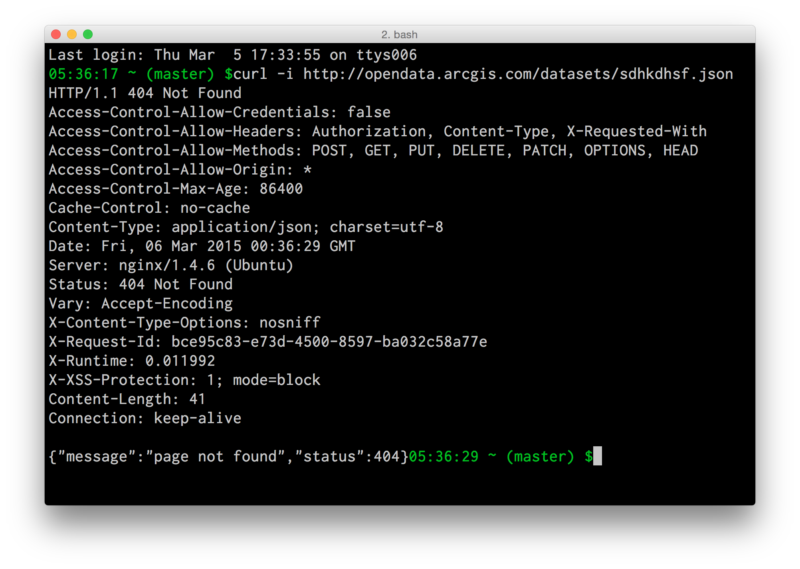

Developing with ArcGIS Open Data
Mike Juniper :: Washington DC R&D Center
Brooks Robertson :: Washington DC R&D Center
Daniel Fenton :: Washington DC R&D Center
ArcGIS Open Data
clt.charlotte.opendata.arcgis.com
Interoperability
koop
- Open Source (github.com/Esri/koop) R & D
- node js
- geojson (& others) ==> feature services
- feature services ==> geojson
- export as kml, csv, shp

Socrata
Registered as an item in ArcGIS Online:
dcdev.maps.arcgis.com/home/item.html?id=ebf151a0feda4c57ac7422dcd48d87dcOpenSearch & DCAT
Daniel Fenton
Open Data API
Brooks Robertson
What can you do with it?
Build an app!

ArcGIS Open Data
$.getJSON('http://my.api.url')
.done(function (response, status, xhr) {
/* stuff it into the DOM... */
})
.fail(function (xhr, status, error) {
/* do something about the error! */
});
$.getJSON('http://my.api.url')
.done(function (response, status, xhr) {
/* stuff it into the DOM... */
})
.fail(function (xhr, status, error) {
/* do something about the error! */
});
$.getJSON('http://my.api.url')
.done(function (response, status, xhr) {
/* do something with the response! */
})
.fail(function (xhr, status, error) {
/* do something about the error! */
});
$.getJSON('http://my.api.url')
.done(function (response, status, xhr) {
/* do something with the response! */
})
.fail(function (xhr, status, error) {
/* do something about the error! */
});
MV*


Choosing the Best JavaScript Framework for You
Friday, 13 Mar 2015, 1:00pm - 2:00pmKey endpoints:
$.getJSON(MyApiUrl + '/datasets.json?q=water&page=1');
$.getJSON(MyApiUrl + '/datasets.json?q=water&page=1');$.getJSON(MyApiUrl + '/datasets/abc123.json');
$.getJSON(MyApiUrl + '/datasets/abc123.json');And maybe:
$.getJSON(MyApiUrl + '/datasets/abc123/related.json');
$.getJSON(MyApiUrl + '/datasets/abc123/related.json');$.getJSON(MyApiUrl + '/datasets/autocomplete?query=wat');
$.getJSON(MyApiUrl + '/datasets/autocomplete?query=wat');Also:
Errors...

$.getJSON('http://my.api.url')
.done(function (response, status, xhr) {
if (response.error) {
/* you don't have to do this! */
}
})
.fail(function (xhr, status, error) {
switch (xhr.status) {
case 404:
/* handle 404 */
default:
/* handle other errors */
}
});
$.getJSON('http://my.api.url')
.done(function (response, status, xhr) {
if (response.error) {
/* you don't have to do this! */
}
})
.fail(function (xhr, status, error) {
switch (xhr.status) {
case 404:
/* handle 404 */
default:
/* handle other errors */
}
});
Gotcha's:
- Currently no JSONP support
- Does support CORS
- But ... IE < 10

mjuniper.github.io/OpenData-Backbone
Ok,... how?
Fork it: github.com/mjuniper/OpenData-Backbone
then:
$ git clone
$ cd opendata-backbone
$ npm install
$ bower install
$ gulp serve
In backbone-land...
DatasetCollection = Backbone.Collection.extend({
url: function () {
//get the params (q=, page=, etc) from somewhere...
var queryParams = '';
return MyOD.config.api + 'datasets.json?' + queryParams;
},
parse: function (resp) {
return resp.data;
}
});
and
DatasetModel = Backbone.Model.extend({
url: function () {
return MyOD.config.api + 'datasets/' + this.get('id') + '.json';
},
parse: function (response) {
return response.data;
}
});
More to come?